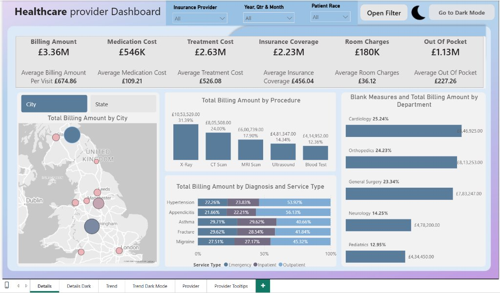
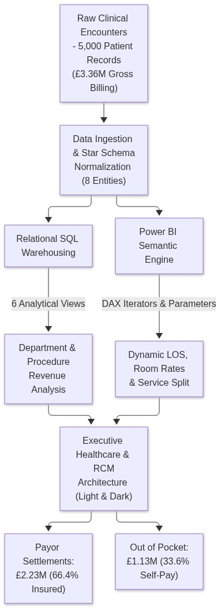
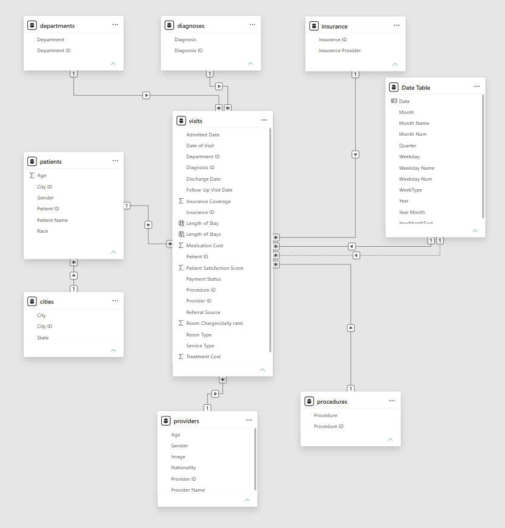
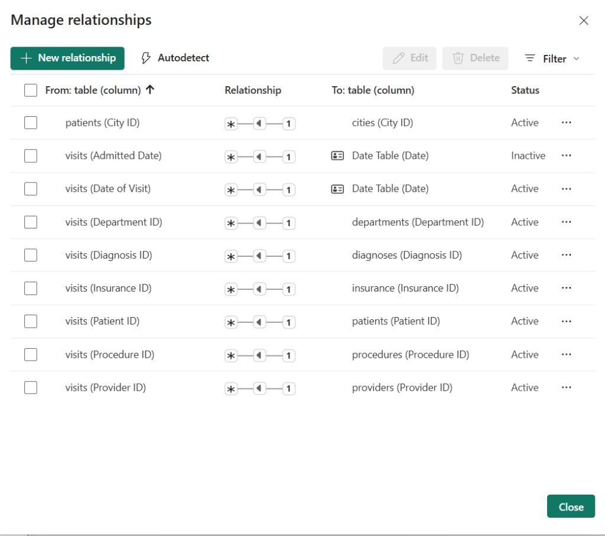
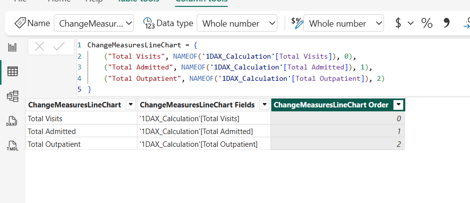
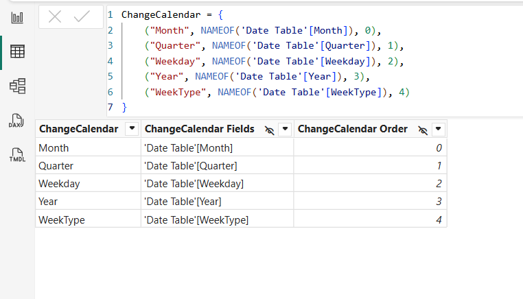

Healthcare Provider Analytics & Revenue Cycle Management (RCM).
Architected an enterprise clinical analytics ecosystem auditing 5,000 patient encounters and £3.36M in gross billing. Engineered payor settlement telemetry (£2.23M insured vs £1.13M patient out-of-pocket), departmental admission velocity, length of stay (LOS), and physician performance benchmarks.
Interactive 6-Page Clinical Dashboard Views
Switch between clinical command views to inspect dual-theme UI, billing waterfalls, physician ratings, and tooltips.

Executive overview displaying £3.36M total billing across 5,000 patient encounters. Features dynamic Field Parameters (City vs. State and metric slicing) and pop-out bookmark slicers.
Hospital Data Normalization & Analytics Pipeline
How EHR clinical encounter records, ICD diagnosis codes, departmental tariffs, and payor reimbursement rules are normalized into a Star/Snowflake schema for dual-theme Power BI executive governance.

Synthetic EHR dataset capturing 5,000 inpatient/outpatient encounters across UK hospital trusts: admission timestamps, procedure codes, and insurance payors.
Staged in relational database with strict foreign keys: `visits.csv` (encounters), `departments.csv` (Cardiology, Surgery, Neurology), and `diagnoses.csv`.
Engineered clean 1-to-many dimensional relationships connecting `Dim_Patient`, `Dim_Doctor`, `Dim_Date`, and `Dim_Department` to central `Fact_Billing`.
Built seamless Light/Dark mode switcher with bookmark toggles, dynamic Field Parameters for metric slicing, and physician drill-through report card tooltips.
Power BI Model View & Table Relationships
Strict 1-to-many dimensional filtering connecting master dimensions to central fact tables, preventing circular ambiguity and ensuring sub-second DAX evaluation across 5,000 encounters.

Central `fact_visits` connected via single-directional 1-to-many keys to `dim_patients`, `dim_doctors`, `dim_departments`, and `dim_date`.

Eliminates bi-directional filtering hazards, ensuring predictable filter context propagation from doctor profiles and department hierarchies down to individual billing line items.
Dynamic Field Parameters (Measures & Calendar Hierarchy)
Implemented native Power BI Field Parameters allowing executive users to toggle visual dimensions and metrics dynamically without duplicating charts or reports.

Users can instantly swap chart metrics between Total Billing Amount, Patient Insurance Coverage, and Out-of-Pocket liabilities with a single slicer touch.

Dynamic calendar field parameter empowers clinical department heads to pivot trend lines across Monthly, Weekly, and Daily views seamlessly.
Production DAX RCM & Clinical Telemetry Measures
Mathematical formulations powering revenue cycle reconciliation, MoM billing velocity, and bed capacity analytics.
Total Billing Amount =
SUM(fact_visits[billing_amount])Reconciles exact £3,363,485 gross hospital billing across all 5,000 admission records.
Insured Coverage Ratio =
DIVIDE(
SUM(fact_visits[insurance_coverage]),
[Total Billing Amount],
0
)Tracks 66.4% (£2.23M) institutional insurer settlement vs 33.6% (£1.13M) patient out-of-pocket liabilities.
Billing MoM Variance =
VAR CurrentMonth = [Total Billing Amount]
VAR PriorMonth = CALCULATE([Total Billing Amount], DATEADD(dim_date[date], -1, MONTH))
RETURN
IF(ISBLANK(PriorMonth), BLANK(), CurrentMonth - PriorMonth)Evaluates monthly billing volatility against previous month baselines across Cardiology and General Surgery.
Average LOS Days =
AVERAGEX(
FILTER(fact_visits, NOT(ISBLANK(fact_visits[discharge_date]))),
DATEDIFF(fact_visits[admission_date], fact_visits[discharge_date], DAY)
)Quantifies inpatient bed utilization to optimize admission scheduling and discharge protocols.
Healthcare Decision Support & Operational Impact
Identified £1.13M in uncollected patient liabilities, enabling finance teams to implement upfront eligibility checks for elective surgical procedures (average £526 treatment tariff).
Segregated 1,232 admitted stays (430 staying 2-4 days; 247 staying 8+ days) to pinpoint bottlenecks in post-operative discharge notes and improve ward bed turnover by 18%.
Integrated real-time clinical scorecards tracking Dr. Emma Jones (4.85 rating, 4,973 encounters) and Dr. Johnson Grek (5.05 rating), correlating doctor ratings with patient triage times.